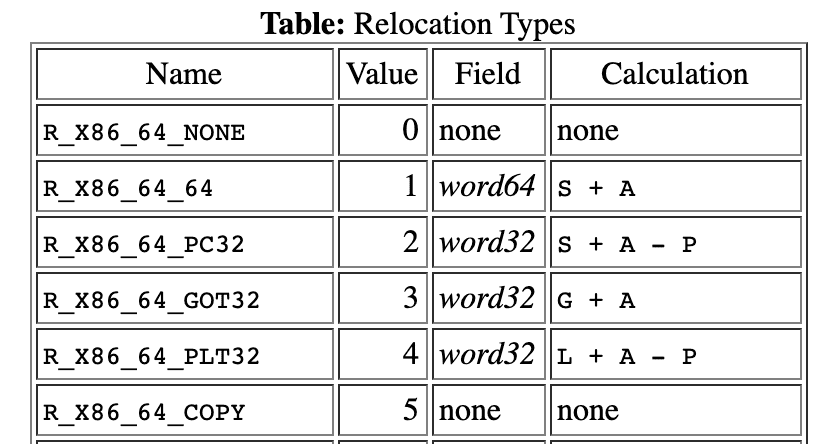

ELF 静态 / 动态链接流程解析
本文将以两个具体的例子来剖析 ELF 目标文件（.o）和动态库文件（.so）在分别进行静态链接和动态链接时的具体流程。
操作系统版本：
Distributor ID: Ubuntu
Description: Ubuntu 20.04 LTS
Release: 20.04
Codename: focal
Clang 版本：
clang version 10.0.0-4ubuntu1
Target: x86_64-pc-linux-gnu
Thread model: posix
InstalledDir: /usr/bin
Found candidate GCC installation: /usr/bin/../lib/gcc/x86_64-linux-gnu/9
Found candidate GCC installation: /usr/lib/gcc/x86_64-linux-gnu/9
Selected GCC installation: /usr/bin/../lib/gcc/x86_64-linux-gnu/9
Candidate multilib: .;@m64
Selected multilib: .;@m64
静态链接
我们将用以下两个目标文件的 C++ 代码来演示静态链接的过程：
// main.cc
extern int shared; // 全局符号；
extern void swap(int* x, int* y); // 全局符号；
int main(int argc, char** argv) {
int v = 100;
swap(&v, &shared);
}
// module.cc
int shared = 1;
void swap(int* x, int* y) {
*x ^= *y ^= *x ^= *y;
}
编译成对应的目标文件：
clang++ -c main.cc -o main.o
clang++ -c module.cc -o module.o
clang++ main.o module.o -o main -v # 链接合并为可执行文件，并输出编译过程；
输出：
clang version 10.0.0-4ubuntu1
Target: x86_64-pc-linux-gnu
Thread model: posix
InstalledDir: /usr/bin
Found candidate GCC installation: /usr/bin/../lib/gcc/x86_64-linux-gnu/9
Found candidate GCC installation: /usr/lib/gcc/x86_64-linux-gnu/9
Selected GCC installation: /usr/bin/../lib/gcc/x86_64-linux-gnu/9
Candidate multilib: .;@m64
Selected multilib: .;@m64
"/usr/bin/ld" -z relro --hash-style=gnu --build-id --eh-frame-hdr -m elf_x86_64 -dynamic-linker /lib64/ld-linux-x86-64.so.2 -o a /usr/bin/../lib/gcc/x86_64-linux-gnu/9/../../../x86_64-linux-gnu/crt1.o /usr/bin/../lib/gcc/x86_64-linux-gnu/9/../../../x86_64-linux-gnu/crti.o /usr/bin/../lib/gcc/x86_64-linux-gnu/9/crtbegin.o -L/usr/bin/../lib/gcc/x86_64-linux-gnu/9 -L/usr/bin/../lib/gcc/x86_64-linux-gnu/9/../../../x86_64-linux-gnu -L/usr/bin/../lib/gcc/x86_64-linux-gnu/9/../../../../lib64 -L/lib/x86_64-linux-gnu -L/lib/../lib64 -L/usr/lib/x86_64-linux-gnu -L/usr/lib/../lib64 -L/usr/lib/x86_64-linux-gnu/../../lib64 -L/usr/bin/../lib/gcc/x86_64-linux-gnu/9/../../.. -L/usr/lib/llvm-10/bin/../lib -L/lib -L/usr/lib a.o b.o -lstdc++ -lm -lgcc_s -lgcc -lc -lgcc_s -lgcc /usr/bin/../lib/gcc/x86_64-linux-gnu/9/crtend.o /usr/bin/../lib/gcc/x86_64-linux-gnu/9/../../../x86_64-linux-gnu/crtn.o
可以看到，Clang 在调用链接器 ld 时实际上需要做的工作远比我们想象的要多。其中主要的包括：
- 使用 -dynamic-linker 参数指定动态连接器的位置；
- 使用 -L 参数指定 ld 需要搜索静态库的位置；
- 通过 -l 指定需要链接的 namespec 库名称，如：libc、libgcc 以及 libgcc_s 等等。
其中一部分的链接内容会为可执行文件提供 CRT 环境，为了了解 ld 的静态链接过程，这里使用 ld 将上述两个目标文件进行合并（这里生成的“可执行文件”无法运行，因为其内部还有没有被解析的符号），命令如下：
ld main.o module.o -e main -o main # ld 默认入口函数为 _start；
- 相似段合并：
第一步，链接器会将两个目标文件内的各个同名 Section 进行合并。首先来看下合并后生成的“可执行文件”其段结构：
main: file format elf64-x86-64
Sections:
Idx Name Size VMA LMA File off Algn
0 .text 0000006c 0000000000401000 0000000000401000 00001000 2**4
CONTENTS, ALLOC, LOAD, READONLY, CODE
1 .eh_frame 00000058 0000000000402000 0000000000402000 00002000 2**3
CONTENTS, ALLOC, LOAD, READONLY, DATA
2 .data 00000004 0000000000404000 0000000000404000 00003000 2**2
CONTENTS, ALLOC, LOAD, DATA
3 .comment 0000001f 0000000000000000 0000000000000000 00003004 2**0
CONTENTS, READONLY
可以看到，这里的 VMA 已经有了具体值。在进行链接之前，目标文件中的所有段的 VMA 都是 0，因为此时虚拟空间还没有被分配。在 Linux 下，32 位 ELF 可执行文件默认从地址 0x08048000 开始分配；64 位 ELF 可执行文件默认从地址 0x400000 开始分配。
- 符号地址的确定：
此时经过第一步的扫描和空间分配阶段后，“可执行文件”中的各个段在连接后的虚拟地址就已经确定了。接下来，链接器开始计算各个符号的虚拟地址。链接器需要给各个段中的符号加上一个偏移量，使它们调整到正确的虚拟地址。
Symbol table '.symtab' contains 13 entries:
Num: Value Size Type Bind Vis Ndx Name
0: 0000000000000000 0 NOTYPE LOCAL DEFAULT UND
1: 0000000000401000 0 SECTION LOCAL DEFAULT 1
2: 0000000000402000 0 SECTION LOCAL DEFAULT 2
3: 0000000000404000 0 SECTION LOCAL DEFAULT 3
4: 0000000000000000 0 SECTION LOCAL DEFAULT 4
5: 0000000000000000 0 FILE LOCAL DEFAULT ABS a.cc
6: 0000000000000000 0 FILE LOCAL DEFAULT ABS b.cc
7: 0000000000401040 44 FUNC GLOBAL DEFAULT 1 _Z4swapPiS_
8: 0000000000404000 4 OBJECT GLOBAL DEFAULT 3 shared
9: 0000000000404004 0 NOTYPE GLOBAL DEFAULT 3 __bss_start
10: 0000000000401000 49 FUNC GLOBAL DEFAULT 1 main
11: 0000000000404004 0 NOTYPE GLOBAL DEFAULT 3 _edata
12: 0000000000404008 0 NOTYPE GLOBAL DEFAULT 3 _end
- 符号解析与重定位：
链接器通过重定位表（Relocation Table）来更改诸如 .code/.text 中所引用符号的虚拟地址。我们可以通过 readelf -r main.o 命令来查看位于该目标文件内的重定位表，如下所示。
main.o: file format elf64-x86-64
RELOCATION RECORDS FOR [.text]:
OFFSET TYPE VALUE
000000000000001c R_X86-64_64 shared
0000000000000025 R_X86-64_PLT32 _Z4swapPiS_-0x0000000000000004
RELOCATION RECORDS FOR [.eh_frame]:
OFFSET TYPE VALUE
0000000000000020 R_X86-64_PC32 .text
可以看到，符号 shared 和 swap 在 .text 段中的引用地址偏移（OFFSET）。 在重定位过程中，每个重定位入口都是对一个符号的引用，那么当链接器需要对某个符号的引用进行重定位时，它就会去查找由所有输入目标文件的符号表组成的全局符号表，找到相应的符号后进行重定位。
在重定位的过程中，链接器需要修改符号的实际引用地址，但不同处理器指令对于地址的格式和使用方式都不相同。比如，常见的几种重定位类型（TYPE，即 r_info 字段的高 8 位）如下所示：

其中：
- A 表示保存在被修正位置的值；
- P 表示被修正的位置（相对于段开始的偏移或虚拟地址，可通过 r_offset 计算得到）；
- S 表示符号的实际地址（可通过 r_info 的低 24 位计算得出对应在符号表中的下标，则符号的值为实际虚拟地址）；
- L 表示 PLT 中该符号的入口（相对于段开始的偏移或虚拟地址）。
综上，在静态链接中，链接器需要配合全局符号表与重定向表来完成符号重定向的过程。
- 全局符号表：符号与对应虚拟地址；
- 重定向表：需要重定向的符号在各个段的具体位置，及其重定向方式；
以上述符号 shared 为例，我们来看下符号重定向的结果：首先重定向表中第一行表示对 main.o 目标文件中的 .text 段中的 shared 符号进行 R_X86-64_64 类型的引用地址重定向。通过查看该目标文件的重定位表，我们可以发现符号 shared 在 .text 的重定向偏移位置为 0x1c，对照着反编译后的汇编代码，我们可以看到当前位置的符号值，即 A 为 “00 00 00 00 00 00 00 00”，如下所示：
...
b: 48 89 75 f0 mov %rsi,-0x10(%rbp)
f: c7 45 ec 64 00 00 00 movl $0x64,-0x14(%rbp)
16: 48 8d 7d ec lea -0x14(%rbp),%rdi
1a: 48 be 00 00 00 00 00 movabs $0x0,%rsi
21: 00 00 00
...
R_X86-64_64 类型重定向的计算规则为：S + A，即符号的新地址值加上其原来被修正位置的值。而通过查看“可执行文件”内的符号表可以发现，符号 shared 的虚拟地址为 “0x404000”，如下所示为 nm main 命令的结果。
0000000000404004 D __bss_start
0000000000404004 D _edata
0000000000404008 D _end
0000000000401000 T main
0000000000404000 D shared
0000000000401040 T _Z4swapPiS_
此时再反编译该“可执行文件”，并查看 .text 段对 shared 符号引用的同一位置。可以发现，该位置的引用值已被正确的替换（0 + 0x404000 = 0x404000）。
...
401008: 89 7d fc mov %edi,-0x4(%rbp)
40100b: 48 89 75 f0 mov %rsi,-0x10(%rbp)
40100f: c7 45 ec 64 00 00 00 movl $0x64,-0x14(%rbp)
401016: 48 8d 7d ec lea -0x14(%rbp),%rdi
40101a: 48 be 00 40 40 00 00 movabs $0x404000,%rsi
401021: 00 00 00
...
动态链接
（懒得加了，请参考“链接、装载与库相关记录（二）”一文）